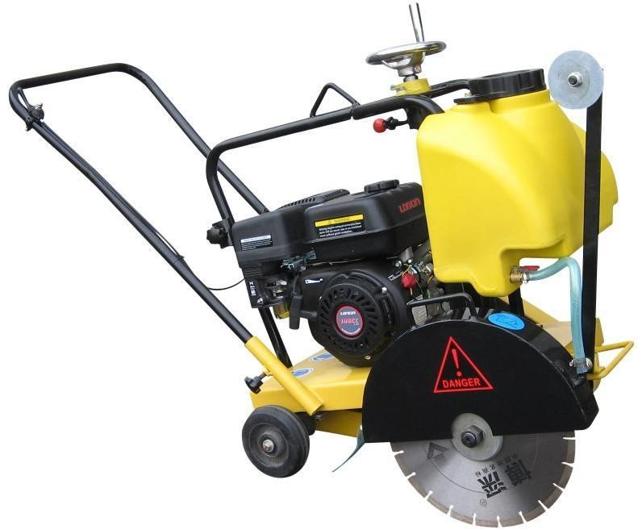
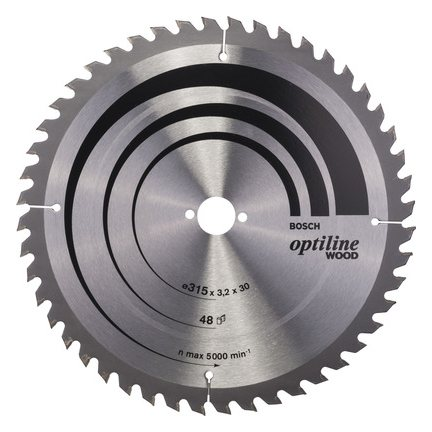
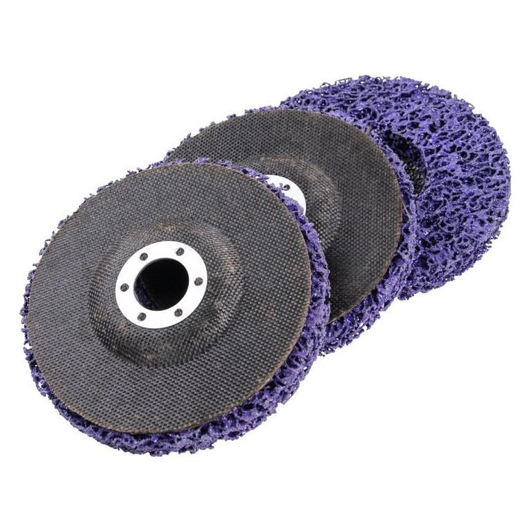

Illustration similar – shows the product type.
Petrol cut-off saw 350 mm (14 in), 3.5 kW
Mains-independent hand-held cut-off saw with a two-stroke engine for cutting concrete, stone, asphalt, pipes and steel on demolition sites.
The petrol cut-off saw cuts concrete, stone, asphalt, pipes and steel independently of a power connection on demolition and strip-out sites and reaches cutting depths of about 125 mm with a 350 mm diamond or abrasive blade. Professional users expect a two-stroke engine with anti-vibration damping, a water connection for dust suppression, a sturdy blade guard, easy belt re-tensioning and spare parts for carburettor, starter and ignition. Compliance covers CE marking under the Machinery Directive, testing to EN ISO 19432, engine approval under Regulation (EU) 2016/1628 and a German manual. In enclosed rooms petrol operation is not permitted without sufficient ventilation because of carbon monoxide; electric or battery machines are to be chosen there.
Technical data
| Blade diameter | 350 mm (14 inch) |
|---|---|
| Max. cutting depth | approx.; 125 mm |
| Displacement / power | 66.7 - 74 cm³ / 3.2 - 3.5 kW (two-stroke) |
| Weight without blade | approx.; 9.6 - 10.6 kg |
| Fuel | Petrol-oil mixture (two-stroke) |
| Dust suppression | Water connection for wet cutting |
| Vibration damping | Anti-vibration system, have the vibration value per EN 12096 stated |
| Customs tariff number (HS) | 84678900 |
EU standards and regulations
2006/42/EGMachinery Directive (Machinery Regulation (EU) 2023/1230 applies from 20 Jan 2027)EN ISO 19432Portable hand-held internal-combustion cut-off machines, safety requirements and testing(EU) 2016/1628Exhaust emissions of engines for non-road mobile machinery, Stage VEN 13236Superabrasive tools (diamond blades), safety requirements (oSa mark)EN 12096TRGS 559Mineral dust (use with water/extraction)
Goes well with

More products in this category








